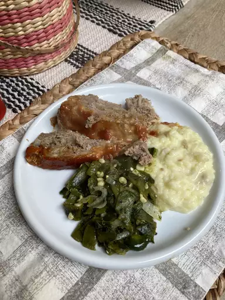

Meatloaf

Ingredients
- 1 frac12 pounds ground beef
- 1 egg
- 1 onion, chopped
- 1 cup milk
- salt and pepper to taste
- frac13 cup ketchup
- 2 tablespoons brown sugar
- 2 tablespoons prepared mustard
- Preheat the oven to 350 degrees F(175 degrees C). Lightly grease a 9x5 inch loaf pan
- Combine ground beef, onion, milk, bread crumbs and egg in a large bowl; season with salt and pepper. Transfer into prepared loaf pan.
- Mix ketchup, brown sugar, and mustard together in a small bowl until well combined. Pour over meatload and spread it evenly over
- Bake in the preheated oven until no longer pink in the center, about 1 hour